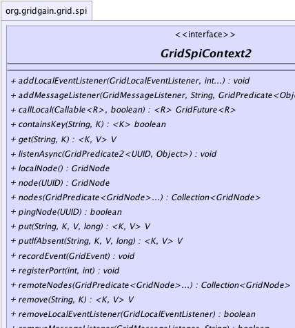
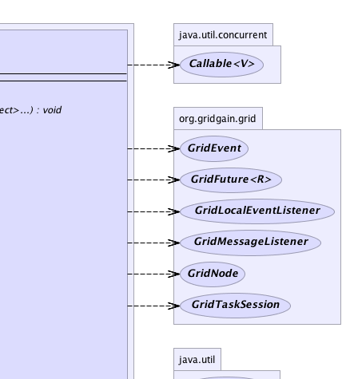
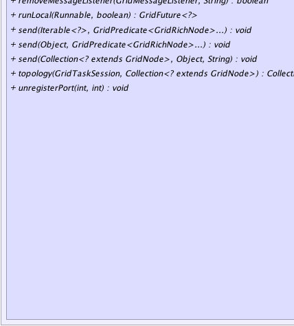
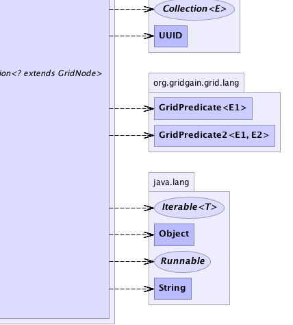

|
|

|

|
|

|

|

|
GridGain™ 3.6.0c
Community Edition |
|||||||||
| PREV CLASS NEXT CLASS | FRAMES NO FRAMES | |||||||||
| SUMMARY: NESTED | FIELD | CONSTR | METHOD | DETAIL: FIELD | CONSTR | METHOD | |||||||||
public interface GridSpiContext2
SPI context provides common functionality for all SPI implementations.
| Wiki | |
| Forum |
|  |  |
|  |  |
| Method Summary | ||
|---|---|---|
void |
addLocalEventListener(GridLocalEventListener lsnr,
int... types)
Adds an event listener for local events. |
|
void |
addMessageListener(GridMessageListener lsnr,
String topic,
GridPredicate<Object>... p)
Register a message listener to receive messages sent by remote nodes. |
|
|
callLocal(Callable<R> c,
boolean sys)
|
|
|
containsKey(String cacheName,
K key)
Returns true if this cache contains a mapping for the specified key. |
|
|
get(String cacheName,
K key)
Gets object from cache. |
|
void |
listenAsync(GridPredicate2<UUID,Object> p)
|
|
GridNode |
localNode()
Gets local grid node. |
|
GridNode |
node(UUID nodeId)
Gets a node instance based on its ID. |
|
Collection<GridNode> |
nodes(GridPredicate<GridNode>... p)
Gets a collection of all grid nodes. |
|
boolean |
pingNode(UUID nodeId)
Pings a remote node. |
|
|
put(String cacheName,
K key,
V val,
long ttl)
Puts object in cache. |
|
|
putIfAbsent(String cacheName,
K key,
V val,
long ttl)
Puts object into cache if there was no previous object associated with given key. |
|
void |
recordEvent(GridEvent evt)
Records local event. |
|
void |
registerPort(int port,
int protocol)
Registers open port. |
|
Collection<GridNode> |
remoteNodes(GridPredicate<GridNode>... p)
Gets a collection of remote grid nodes. |
|
|
remove(String cacheName,
K key)
Removes object from cache. |
|
boolean |
removeLocalEventListener(GridLocalEventListener lsnr)
Removes local event listener. |
|
boolean |
removeMessageListener(GridMessageListener lsnr,
String topic)
Removes a previously registered message listener. |
|
GridFuture<?> |
runLocal(Runnable c,
boolean sys)
|
|
void |
send(Collection<? extends GridNode> nodes,
Object msg,
String topic)
Deprecated. |
|
void |
send(Iterable<?> msgs,
GridPredicate<GridRichNode>... p)
Sends given messages to the nodes in this monad. |
|
void |
send(Object msg,
GridPredicate<GridRichNode>... p)
Sends given message to the nodes in this monad. |
|
Collection<? extends GridNode> |
topology(GridTaskSession taskSes,
Collection<? extends GridNode> grid)
Obtain grid node topology for a given task. |
|
void |
unregisterPort(int port,
int protocol)
Deregisters closed port. |
|
| Method Detail |
|---|
Collection<GridNode> remoteNodes(@Nullable GridPredicate<GridNode>... p)
GridDiscoverySpi implementation used. Unlike GridSpiContext2.nodes(GridPredicate[]),
this method does not include local grid node.
p - Optional filtering predicate. If none provided - all remote nodes will
be returned.
Collection<GridNode> nodes(@Nullable GridPredicate<GridNode>... p)
GridDiscoverySpi implementation used. Unlike GridSpiContext2.remoteNodes(GridPredicate[]),
this method does include local grid node.
p - Optional filtering predicate. If none provided - all remote nodes will
be returned.
GridNode localNode()
GridDiscoverySpi
implementation used.
GridDiscoverySpiGridNode node(UUID nodeId)
nodeId - ID of a node to get.
null is such not has not been discovered.GridDiscoverySpiboolean pingNode(UUID nodeId)
GridDiscoverySpi.pingNode(UUID) implementation.
Discovery SPIs usually have some latency in discovering failed nodes. Hence, communication to remote nodes may fail at times if an attempt was made to establish communication with a failed node. This method can be used to check if communication has failed due to node failure or due to some other reason.
nodeId - ID of a node to ping.
true if node for a given ID is alive, false otherwise.GridDiscoverySpi<R> GridFuture<R> callLocal(Callable<R> c, boolean sys) throws GridException
GridExceptionR - c - sys -
GridFuture<?> runLocal(Runnable c, boolean sys) throws GridException
GridExceptionc - sys -
void send(Object msg,
@Nullable
GridPredicate<GridRichNode>... p)
throws GridException
GridException - If failed to send a message to any of the nodes.msg - Message to send.p - Optional set of filtering predicates. All predicates must evaluate to true for a
node to be included. If no predicates provided - all nodes in this monad will be used.void send(Iterable<?> msgs, @Nullable GridPredicate<GridRichNode>... p) throws GridException
GridException - If failed to send a message to any of the nodes.msgs - Messages to send. Order of the sending is undefined. If the method produces
the exception none or some messages could have been sent already.p - Optional set of filtering predicates. All predicates must evaluate to true for a
node to be included. If no predicates provided - all nodes in this monad will be used.@Deprecated void send(Collection<? extends GridNode> nodes, Object msg, String topic) throws GridSpiException
GridCommunicationSpi implementation used.
GridSpiException - If failed to send a message to any of the remote nodes.nodes - Group of nodes to send a message to.msg - Message to send.topic - Topic to send message to.
void addMessageListener(GridMessageListener lsnr,
String topic,
GridPredicate<Object>... p)
GridCommunicationSpi implementation used.
lsnr - Message listener to register.topic - Topic to register listener for.p - Optional filtering predicate. If none provided - all remote nodes will
be returned.
boolean removeMessageListener(GridMessageListener lsnr,
String topic)
lsnr - Message listener to remove.topic - Topic to unregister listener for.
true of message listener was removed, false if it was not
previously registered.
void addLocalEventListener(GridLocalEventListener lsnr,
int... types)
lsnr - Event listener for local events.types - Optional types for which this listener will be notified. If no types are provided
this listener will be notified for all local events.GridEventvoid listenAsync(GridPredicate2<UUID,Object> p)
p - boolean removeLocalEventListener(GridLocalEventListener lsnr)
lsnr - Local event listener to remove.
true if listener was removed, false otherwise.Collection<? extends GridNode> topology(GridTaskSession taskSes, Collection<? extends GridNode> grid) throws GridSpiException
GridSpiException - If failed to get topology.taskSes - Task session.grid - Available grid nodes.
void recordEvent(GridEvent evt)
evt - Local grid event to record.
void registerPort(int port,
int protocol)
port - Port.protocol - Protocol.
void unregisterPort(int port,
int protocol)
port - Port.protocol - Protocol.<K,V> V get(String cacheName, K key) throws GridException
GridException - Thrown if any exception occurs.cacheName - Cache name.key - Object key.
<K,V> V put(String cacheName, K key, V val, long ttl) throws GridException
GridException - Thrown if any exception occurs.K - Key type.V - Value type.cacheName - Cache name.key - Object key.val - Cached object.ttl - Time to live, 0 means the entry will never expire.
null.<K,V> V putIfAbsent(String cacheName, K key, V val, long ttl) throws GridException
GridException - If put failed.K - Cache key type.V - Cache value type.cacheName - Cache name.key - Cache key.val - Cache value.ttl - Time to live.
null if there was no value for given key.<K,V> V remove(String cacheName, K key) throws GridException
GridException - Thrown if any exception occurs.K - Key type.V - Value type.cacheName - Cache name.key - Object key.
null.<K> boolean containsKey(String cacheName, K key)
true if this cache contains a mapping for the specified key.
K - Key type.cacheName - Cache name.key - Object key.
true if this cache contains a mapping for the specified key.
|
GridGain™ 3.6.0c
Community Edition |
|||||||||
| PREV CLASS NEXT CLASS | FRAMES NO FRAMES | |||||||||
| SUMMARY: NESTED | FIELD | CONSTR | METHOD | DETAIL: FIELD | CONSTR | METHOD | |||||||||
|
GridGain - Real Time Big Data
|
|
|
|